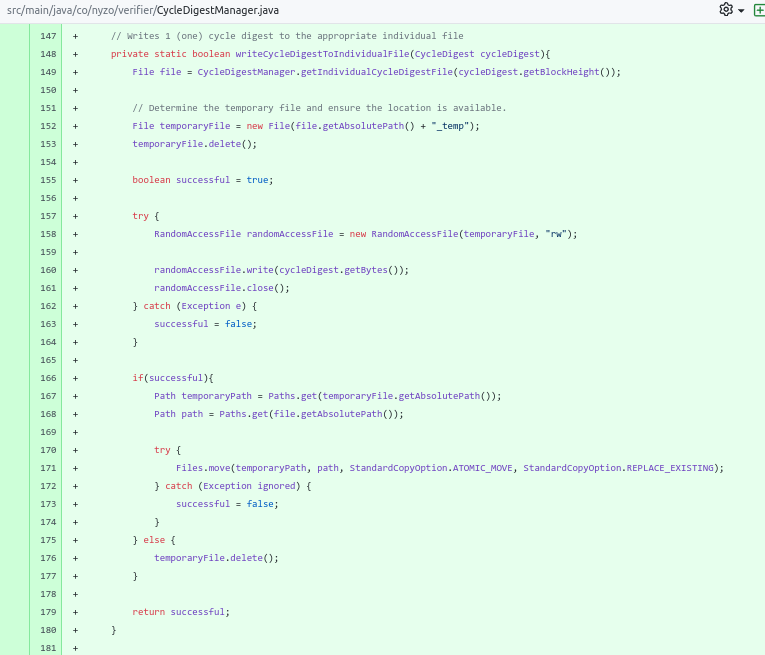
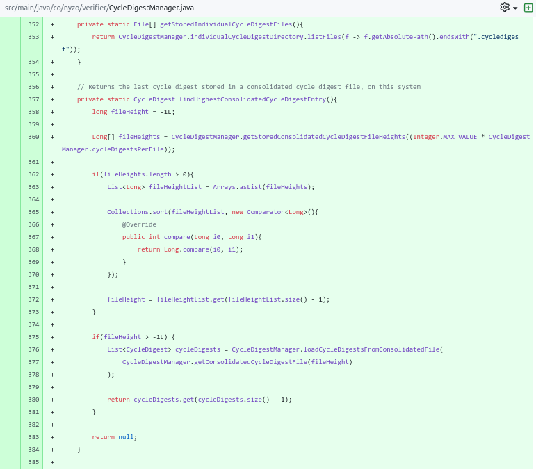

Author: Benjamin Van Renterghem @ construct0 FV
Date: 03/10/2024
Last updated: 03/10/2024
Nyzo version 647
(commits on construct0's GitHub)
introduces the CycleDigestManager and CycleDigestFileConsolidator and refactors existing code to enable their introduction and ensure compatibility.
Changes have been released on construct0's nyzoVerifier repository.
This version affects the Verifier, Sentinel & Client run modes.
Subversion 3 is the final subversion and concludes the release of this major version release.
The Verifier and Sentinel run modes are considered affected due to an extra filter condition being applied to the list operation for block files within the individual block directory, the CycleDigestManager & CycleDigestFileConsolidator do not start for these run modes. Only the Client attempts to start the CycleDigestManager, and by proxy the CycleDigestFileConsolidator.
The CycleDigestManager which is introduced in subversion 2 stores individual cycle digest files in the individual block directory alongside the individual blocks they stem from. There are two existing references to said directory in the context of listing individual block files, these functional references are updated to contain an additional filter condition as to result in only a list of individual block files being returned, as to not contain individual cycle digest files should these be written to the directory in the future.
No references to the parent block directory indicate the need for applying any filtering.
An existing console logging statement has been commented, when creating cycle digests for (historical) blocks this resulted in a large amount of prints & would render the CLI client unusable.
An additional fromFile method was added to allow direct retrieval of a CycleDigest instance from an individual cycle digest file. The existing fromFileForHeight method wraps this method to avoid duplicate code.
The CycleDigestManager is introduced, its duty is to create individual cycle digest files for blocks stored on-disk, to store them on-disk, & to call the consolidation method of the CycleDigestFileConsolidator at least once per the maximum amount of individual cycle digest files which can be created at a time (set to 5000), which in turn consolidates the individual cycle digest files into consolidated cycle digest files and stores them in the appropriate consolidated block directory.
Shown below are the type definition for the CycleDigestFileConsolidator within the project's namespace, necessary imports & the declaration and definition of the consolidator's preference key and its options - which, while distinct, align with the run options of the BlockFileConsolidator; allowing for individual configuration while ensuring consistency. The static constructor enforces the default run option if none is set, dependant on the active run mode.
If permitted by the set run option, the individual cycle digest files are enumerated. If any, the consolidation threshold is determined - which, while distinct, aligns with the consolidation threshold used by the BlockFileConsolidator - and a map containing consolidated cycle digest file height to individual cycle digest file enumeration entries is created.
Each consolidated cycle digest file height in the map is processed, consolidating if permitted in which case deletion is permitted if successful, or solely unconditioned deletion if consolidation is not permitted.
To perform consolidation a separate method, consolidateFiles, is defined, responsible for getting the consolidated cycle digest file for the file height, loading of any cycle digests residing in that file so far, if any, and subsequent loading of the cycle digests residing in the individual cycle digest files provided.
Both the existing cycle digests in the consolidated file as the cycle digests from the individual files are grouped together into a list. Sorted by block height ascending and deduped. To ensure no cycle digests are missing from the sequence, a check for incremental cycle digest block height gaps is performed.
The list of cycle digests is written to the consolidated file and successful=true is returned, allowing for deletion of the individual cycle digest files by the caller.
A helper method was added, which is used while creating the aforementioned map. It extracts the block height from the file name of an individual cycle digest file.
Shown below are the type definition for the CycleDigestManager within the project's namespace, necessary imports & the declaration and definition of the manager's preference key used for determining whether to create a thread and start the manager.
The individual cycle digest directory is set to the individual block directory, a distinct property is used to increase separation between the concepts & to improve readability while still allowing closely related files to reside together on-disk.
It was opportune to define the maximum amount of cycle digests which can be stored in a consolidated cycle digest file to be the same amount of blocks which can be stored in a consolidated block file, they form file height pairs and belong together, yet worthy of mentioning is that (consolidated) cycle digest files are considerably smaller than (individual) block files and increasing this maximum could be more appropriate.
The maximum amount of individual cycle digests which are created and written to disk before an attempt is made to consolidate them is set to 5000. An arbitrary cooldown between consolidate & create runs is defined.
The start method is defined, if permitted a thread is created and consolidate & create calls are made at most once every 30 seconds. Should this class be used by the Verifier and/or Sentinel run modes in the future, this may require further adjusting or an alternative, less decoupled, approach for creating cycle digests of which the block height is near or at the frozen edge height.
After the CycleDigestFileConsolidator had the opportunity to consolidate, the createCycleDigests method is called, an attempt is made to load the last cycle digest stored on-disk, depending on the result and the current frozen edge height, the inclusive start block height is defined.
Subsequently the block height before which we must stop attempting to create cycle digests is defined, which is either the sum of the start block height and the maximum batch size, or the frozen edge height + 1, whichever is lower.
The rolling cycle digest and block are declared.
Within the working range of the start and stop-before block height, attempts are made to create cycle digests per block height. Starting off with an attempt to get the block from on-disk storage, should the block exist the cycle digest which we desire to write to file is created.
For block height 0 the suggested block height and no previous cycle digest is provided, thus creating a cycle digest for the suggested block height.
For any other block height we check if we've already written a cycle digest to disk during this call, if not the last cycle digest stored on-disk is used to create the (next) cycle digest.
If we've already written a cycle digest to disk during this call, the rolling cycle digest is used - this prevents unnecessarily loading the cycle digest we've just written to disk, from disk.
In both cases, a check is in place to ensure we only attempt to create a cycle digest if the block height is incremented by 1 compared to the cycle digest with the largest block height on disk (i.e. rollingCycleDigest or lastCycleDigest's block height).
A non-null cycle digest instance indicates we may perform an attempt to write the cycle digest to its individual file. Should this fail, the processing this call entails ends & the caller will sleep and consolidate before the create method is called again.
If the write was successful the instance is stored as the new rolling cycle digest & the next iteration of the loop, if any, will use it to create the next cycle digest.
The writeCycleDigestsToIndividualFile method writes the cycle digest to its appropriate individual file. It determines the file to write to by using a separate helper method & the cycle digest itself.
The writeCycleDigestsToConsolidatedFile method writes a list of cycle digests to a consolidated file. Akin to how blocks are written to a consolidated block file, it writes the amount of cycle digests to the file in the Short type format, followed by all cycle digests in the list.
The loadCycleDigestFromIndividualFile method acts as a passthrough/wrapper method for the new CycleDigest method introduced in subversion 1.
The loadCycleDigestsFromConsolidatedFile methods acts as a narrowing overload method around the variant which requires the inclusive minimum and maximum block heights to be provided. It calls the method it overloads with the absolute minimum and absolute maximum for the consolidated file's file height.
The loadCycleDigestsFromConsolidatedFile method allows for the loading of a specific slice of cycle digests from the provided consolidated cycle digest file, the homogeneous sum of the existences, one evaluation per cycle digest, determines whether the list returned will be complete or partial. The minimum and maximum block heights are inclusive.
The cycle digests are sorted block height ascending and returned.
The getIndividualCycleDigestFile method acts as a passthrough/wrapper method for the existing fileForHeight method of the CycleDigest class.
The getConsolidatedCycleDigestFile methods provides the consolidated cycle digest file, an opportunistic call to the consolidatedFileForBlockHeight method of the BlockManager class is performed and the file extension is modified, this method is planned for refactoring.
The getLastCycleDigestEntry method requests both the individual and consolidated cycle digests with the largest block height, it returns the cycle digest instance with the largest block height, if any.
The findHighestIndividualCycleDigestEntry method returns the cycle digest instance for the individual cycle digest file with the largest block height, derived from its filename.
The getStoredIndividualCycleDigestFiles method returns all individual cycle digest files residing in the individual cycle digest directory.
The findHighestConsolidatedCycleDigestEntry method returns the cycle digest instance with the largest block height residing in a consolidated cycle digest file.
The getStoredConsolidatedCycleDigestFileHeights returns the file heights for consolidated cycle digest files up until the point of exhaustion or the occurrence of a gap in file heights.
A call was added to the startup procedure of the Client to attempt a start of the CycleDigestManager, and by proxy the CycleDigestFileConsolidator, both subject to the aforementioned (newly introduced) preference flags and their configurations.